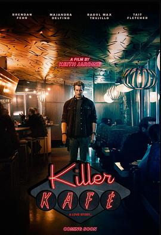

5.3
杀戮循环
Kill Me Again
2025
美国
评分 5.3
导演:
基思·雅各（Keith Yackey）
演员:
劳尔·特鲁希洛 / 布伦丹·费尔 / 基思·雅各 / 玛简德拉·黛芬诺 / 泰特·弗莱彻 / 米歇尔·沃特森 / 马修·佩奇
类型:
恐怖,惊悚,科幻
剧情简介
查理（布伦丹·费尔饰）是一名恶名昭著的连环杀手，因其残忍手法被媒体称为“午夜绞肉机”。某个夜晚，他再次出现在猎物面前，准备照例完成杀戮——然而这次，一切并未如往常那样结束。醒来时，他发现自己回到了当晚的起点，时间被锁进了一个无法逃脱的循环。最初，查理沉迷于自己的暴力游戏，不断重复杀戮的过程，享受操控死亡的快感。但随着循环的不断重启，细节开始发生偏移：受害者换了位置、屋内的时钟停摆、镜中的倒影竟对他微笑。现实与幻觉交错，他逐渐意识到，自己或许已坠入某种超自然惩罚——或是一场扭曲的实验。影片以心理恐怖与科幻概念融合构建叙事：观众在循环的视角中与主角一同陷入焦虑与迷乱。基思·雅各导演采用冷色摄影与极限近景镜头，将压迫感与血腥氛围推向极致；时间重置的瞬间以闪光、残响与低频噪音构成听觉冲击，使“重复”本身成为恐怖的核心。随着剧情推进，查理逐渐崩溃，他开始质疑自己的记忆是否真实——每一次死亡都像是自我惩罚，每一次重生都更接近疯狂。影片在最后揭示一个冷峻的转折：查理并非人类世界的罪人，而是被用于极端心理实验的复制体，其意识被困于循环中，用于研究“罪恶与自我意识”的极限。在结尾的那一刻，他跪在血泊中恳求：“请，再杀我一次。”镜头旋转，画面回到最初的黑夜——时间再次重启。《杀戮循环》以独立制作的紧凑风格呈现出哲学意味的惊悚故事，探讨暴力、救赎与永恒惩罚的边界，让观众在恐惧之余思考人性的宿命与意识的囚笼。